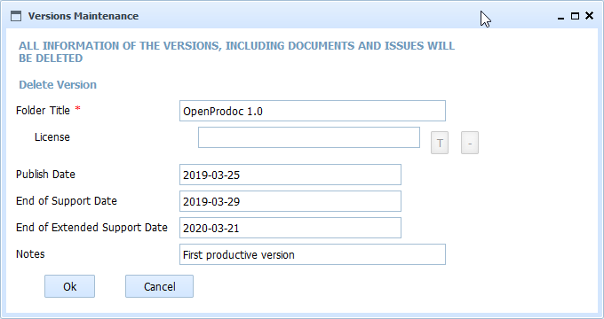

This form deletes a version of a product and ALL the contained folders and documents, including issues.
This operation can't be undone and ALL the information and structure of the folders will be lost (altough the documents could be recovered during some time from the paperbin)

In SMO Tree there is a complete view of operations and forms.